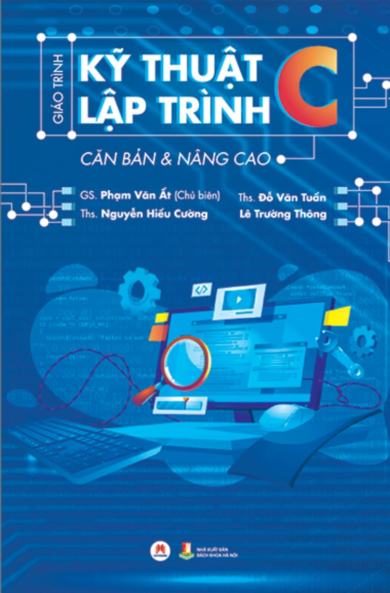
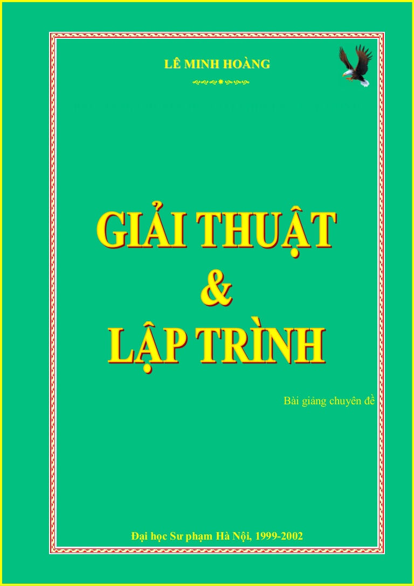
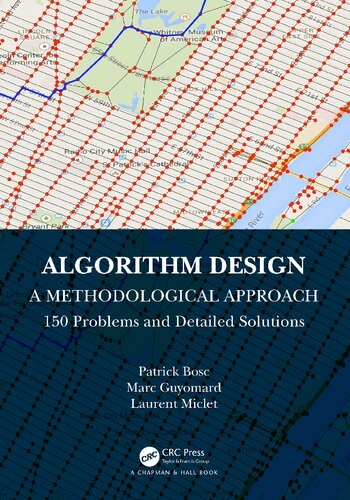

Phần mở đầu
Bạn đang tìm kiếm một cuốn sách hay để học lập trình? Bạn muốn nâng cao khả năng về giải thuật và thuật toán?
Sau đây chúng mình xin giới thiếu đến các bạn 3 cuốn sách mà tụi mình cảm thấy rằng chúng có thể giải quyết được những vấn đề trên
Tuy nhiên, nếu bạn không thích đọc sách thì có thể tham khảo các trang web mà tụi mình giới thiệu: HackerRank, LeetCode, vv
KỸ THUẬT LẬP TRÌNH C - PHẠM VĂN ẤT

Sách Kỹ thuật lập trình C từ cơ bản đến nâng cao của thầy Phạm Văn Ất là tài liệu lập trình C mà nhiều trường đại học hiện nay vẫn đang lấy làm tại liệu tham khảo cho môn học lập trình C.
Cuốn sách này là sự tiếp nối cuốn Ngôn ngữ C – Lý thuyết và thực hành với 80 chương trình mẫu trong KHKT và Quản lý kinh tế" của cùng tác giả.
Phần đầu (cơ sở) dựa trên nền của cuốn trước nhưng thêm vào khá nhiều tư liệu mới như trong các chương, mục: hàm đệ quy, con trỏ hàm, cấu trúc, danh sách móc nối, kỹ thuật đồ hoạ và tổ chức tệp. Phần nâng cao là các tư liệu hoàn toàn mới.
Bạn có thể tìm thấy ở đây nhiều vấn đề bổ ích và lý thú như: kỹ thuật tạo ảnh chuyển động, in ảnh từ màn hình đồ hoạ, chơi nhạc trên máy, kiến trúc bộ nhớ 8086 và cách truy nhập trực tiếp vào bộ nhớ, sử dụng các chức năng sâu của DOS và BIOS, điều khiển chuột, cách lập hàm xử lý ngắt và chương trình thường trú, thay đổi chức năng các phím, lập trình theo thời gian thực và lập trình hướng sự kiện, thiết kế trò chơi đuổi bắt, tổ chức chương trình trên nhiều tệp, tạo chương trình COM, kết hợp giữa C và Assembler.
Trong sách đưa vào hơn 200 hàm chuẩn chọn lọc của Turbo C đủ để bạn đọc tra cứu và sử dụng. Các vấn đề lý thuyết được minh hoạ trên nhiều chương trình chọn lọc đã thử nghiệm trên máy
Link tải tài liệu: Tại đây
GIẢI THUẬT VÀ LẬP TRÌNH - LÊ MINH HOÀNG

Nếu bạn là người đam mê tin học, nếu bạn là người muốn khám phá về lập trình, hẳn bạn phải biết đến một cuốn sách tin học rất nổi tiếng ở Việt Nam. Từ những học sinh không chuyên đến những thành viên đội tuyển thi quốc tế tin học, có lẽ không một ai chưa từng học qua cuốn sách được biên soạn bởi một thầy giáo trẻ những đầy tài năng của trường Đại học Sư phạm Hà Nội, thầy Lê Minh Hoàng.
Cuốn sách này bao gồm nhiều chương, mỗi chương đề cập đến một phương pháp giải thuật cơ bản hoặc nâng cao, ví dụ như phương pháp sinh, quay lui, nhánh cận, quy hoạch động, các thuật toán trên đồ thị, v.v. Cuốn sách cũng cung cấp nhiều ví dụ minh họa và bài tập thực hành để người đọc có thể áp dụng những kiến thức đã học vào thực tế. Cuốn sách được viết bằng ngôn ngữ C/C++, nhưng có thể dễ dàng chuyển sang các ngôn ngữ khác nếu bạn đã nắm vững cú pháp cơ bản.
chúng tôi nghĩ cuốn sách này là một nguồn tài liệu quý giá cho những ai muốn học tập và nghiên cứu về giải thuật và lập trình. Cuốn sách không chỉ giúp bạn nắm được những khái niệm và kỹ thuật cơ bản, mà còn mở rộng tầm nhìn và tư duy logic của bạn. Cuốn sách cũng có thể làm cẩm nang cho những ai muốn tham gia các cuộc thi lập trình quốc tế như ACM-ICPC hay Olympic tin học.
Link tải tài liệu: Tại đây
Algorithm Design - A Methodological Approach - 150 problems and detailed solutions, Patrick Bosc, Marc Guyomard, Laurent Miclet, CRC

Đầu tiên, lý do mà mình(Lê Vũ Khang) muốn giới thiệu cuốn sách này vì trong khoảng thời gian tham gia cuộc thi ICPC ở trường, đây là tài liệu đã được thầy giáo giới thiệu cho tất cả các học sinh tham gia. Nên mình nghĩ cuốn sách này cũng sẽ giúp ích được cho các bạn
"Algorithm Design: A Methodological Approach" là một cuốn sách tập trung vào các kỹ thuật giải quyết vấn đề thuật toán. Nó cung cấp một phương pháp cấu trúc để thiết kế thuật toán và bao gồm một bộ sưu tập gồm 150 vấn đề. Đối với mỗi bài toán, cuốn sách đưa ra một đề bài rõ ràng và từng bước. Đặc biệt, cuốn sách cung cấp một giải pháp hoàn chỉnh, với sự tham chiếu đến các nguyên tắc thiết kế đã được trình bày; thường xuyên, cuốn sách cũng chỉ ra một số lỗi cổ điển. Khoảng hai phần ba của cuốn sách được dành cho việc xây dựng các giải pháp một cách hợp lý và có lý.
Link tải tài liệu: Tại đây
Phần kết
Hy vọng bạn đã tìm thấy những cuốn sách phù hợp với nhu cầu và sở thích của mình. Mong rằng những cuốn sách này sẽ giúp bạn học lập trình dễ dàng hơn. Bạn có thể đặt mua những cuốn sách này trên các trang web bán hàng trực tuyến hoặc tìm kiếm chúng tại các thư viện gần nhà. Nếu các bạn có những quyển sách tâm đắc về lập trình thì hãy giới thiệu cho tụi mình ở phần comment nhé!
Chúc bạn đọc sách vui vẻ và thành công trong con đường lập trình của mình.